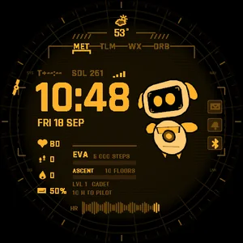
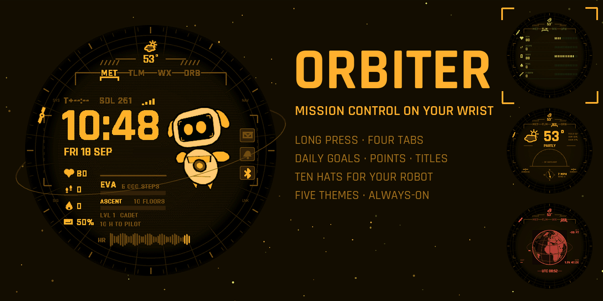
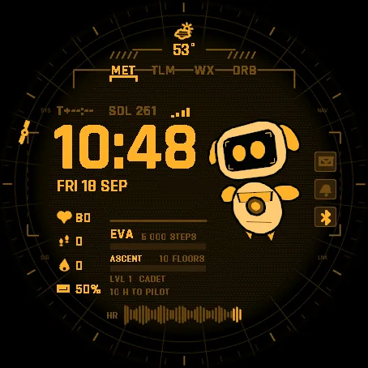
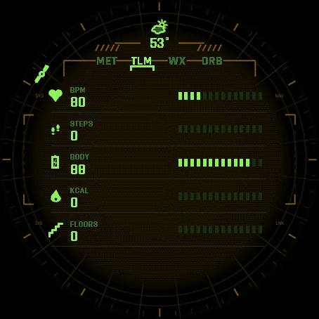
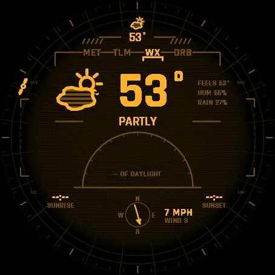
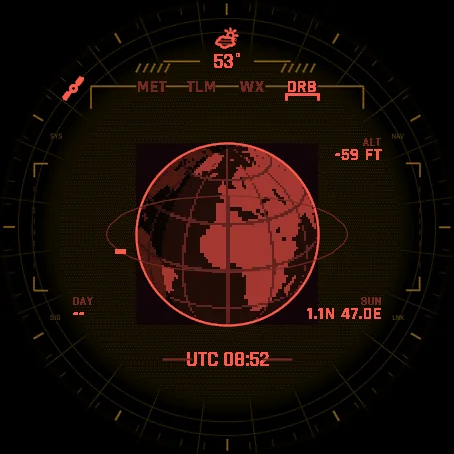
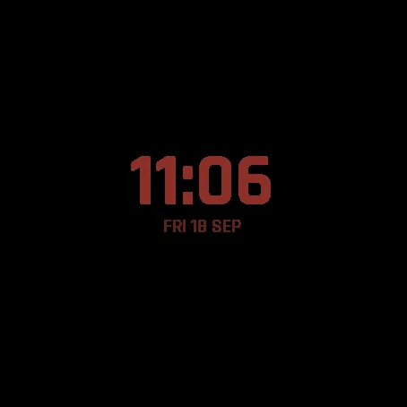

TibereJ › Watch faces › Orbiter
Watch face for Garmin watches
Orbiter
Mission-control watch face with a robot crew mate







Settings on the watch
Hold UP, pick Watch Face, select Orbiter, press START, then Customize. The menu is drawn in the style of the face: theme, robot hat, which screen is shown, the five data rows, the robot's flames, always-on brightness. It also holds Progress - your points and goals - and a short How it works guide in plain words. The same settings are in Garmin Connect if you prefer the phone.
Four tabs, one long press
Long press the face to switch tab.
- MET the time in big digits, date and day of year, time since sunrise, four data rows, the daily missions and your rank, a heart-rate trace of the last hour. Your robot crew mate floats next to the time.
- TLM five registers you choose: heart rate, steps, Body Battery, calories, floors, altitude, distance, intensity minutes, notifications or weather, each with a segment gauge.
- WX temperature, feels like, humidity, rain chance, the condition, the sun's arc across the day with sunrise and sunset, wind compass.
- ORB the Earth from orbit, continents and day-night line, your position, UTC time, altitude.
A small satellite rides the bezel at the minute hand's position.
Daily goals, points, hats
Reach the step goal set on your watch and earn 4 points. A second goal adds 2 more: the floors goal of your watch, or on watches without a floor counter, your weekly intensity-minutes goal. Points earn titles - Cadet, Pilot, Commander, Flight Director - and unlock ten hats for the robot: cap, top hat, party cone, pilot helmet, crown, propeller beanie, cowboy hat, beret, CAPCOM headset, dish antenna. The Progress page in the menu shows exactly where you stand: steps today against your goal, the second goal, the next hat and the points it takes. Nothing leaves the watch: the count lives in the watch face itself.
One colour per theme
Amber, cyan, green, white or red. Everything on screen takes the theme's hue and its shades, on a striped dark background like an old console.
Honest data
When the watch has no reading, a field shows -- rather than a made-up number. Weather needs the watch to have received a forecast from the phone.
Always-on
Only the time and date stay lit, in a dimmed shade of the theme, and they drift a few pixels every minute to protect the AMOLED screen. A setting keeps them at full brightness if you prefer.
Watches
Every watch below was run in the simulator, normal and always-on, before being listed. AMOLED screens only.
- Forerunner 165 / 165 Music / 265 / 265S / 570 / 965 / 970 Venu 2 / 2S / 2 Plus / 3 / 3S / 4 vivoactive 5 / 6 fenix 8 / 8 Pro / E, epix (Gen 2) / epix Pro (Gen 2)
- Instinct 3 AMOLED, MARQ (Gen 2), Descent G2 / Mk3, D2 Air X10 / Mach 1 / Mach 2 / Mach 2 Pro, Approach S50 / S70
Permissions: sensor history (Body Battery, altitude) and user profile (goals). No phone app, no account.